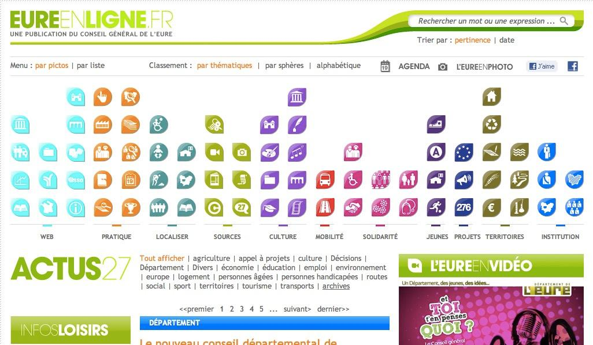
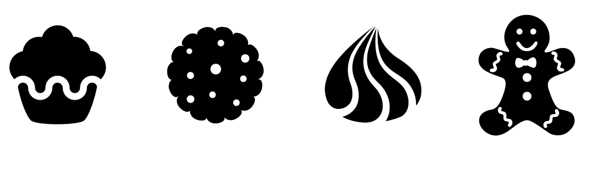
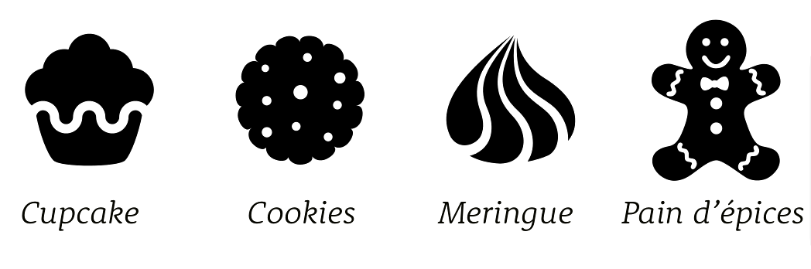

Problèmes avec les libellés
La place disponible
L'internationnalisation
Alternative possible
Utiliser des icônes
- Un pictogramme
- dans un contexte particulier
- avec un style définis
Un pictogramme
Une forme
Qui transmet une idées
Avec un équilibre graphique
De la cohérence
Qui est « facilement » identifiable
et lisible
en fonction du contexte
Accélère la compréhension
Assimilation rapide de concept
Compréhension plus aisée.
« Reconnaître une image est plus facile que de lire un texte »
Favoriser la mémorisation
Une forme = une idée
est plus facile à mémoriser
qu’une idée = un ensemble de symbôles
Faciliter la navigation
Du fait de l’accélération de la compréhension
Navigation « à l’aveugle » en reconnaissance de formes
Génial ?
« Trop bien, mettons plein d’icônes ! »
Trop bien ?

Attention aux raccourcis (conceptuels)
Une meringue ? Un oignon ? Une flamme ? Que voyez-vous ?
Le contexte, ce parachute

Les étiquettes, ces parachutes

Pas d'illustration
Rythmer : oui ! Illustrer : non !
Ce n’est pas le visuel qui fait l’icône, c’est l’usage
L'art de choisir ses icônes
Quel icône pour « partager » ?
Signification
Choix
Test
Go / No go
Pack d'icones, pour une cohérence globale.
Autres points
Universalité
Barrière de la langue
Contexte socio-culturel
Géolocalisation
Pour la géolocalisation entre Google, Apple, Nokia... aucun des pictogrammes ne se ressemble !
Télécharger
Enregistrer
Et notre enregistrement alors ? Faut-il le changer ?
Comment choisir ?
Ce qui compte, ce sont les utilisateurs
Pas les égos des designers
Des standards
ISO :
plus de 65% de reconnaissance
moins de 10% de reconnaissance de l'inverse
ANSI :
plus de 80% de reconnaissance
moins de 10% de reconnaissance de l'inverse
W3C, pas de règle
Conclusion
Accélère la compréhension
Favorise la mémorisation
Facilite la navigation
Permet d'homogénéiser l'interface
Attention à ce qu'elles soient bien reconnu